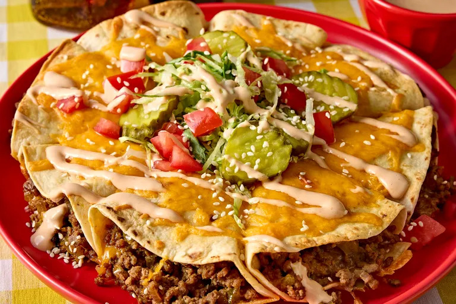

Crispy Big Mac Tortilla Pockets

Photo by Photographer: Jen Causey / Food Styling: Margaret Monroe Dickey / Prop Styling: Julia Bayless
Description
These crispy Big Mac tortilla pockets capture all the nostalgic flavors of the iconic burger in one handheld package. Seasoned ground beef is cooked with onions, pickles, ketchup, mustard, and Worcestershire sauce for a savory, tangy filling that delivers classic burger flavor in every bite.
Ingredients
- cooking spray
- 1 pound 80/20 ground beef
- 2/3 cup finely chopped red onion
- 1 teaspoon kosher salt
- 1/2 cup chopped crinkle-cut dill pickle chips
- 1 cup plus 3 tablespoons ketchup, divided
- 1 tablespoon plus 3/4 teaspoon yellow mustard, divided
- 1 1/2 tea spoons Worcestershire sauce, divided
- 4 (8 inch) flour tortillas
- 8 ounces Cheddar cheese, shredded, divided
- 1/3 cup mayonnaise
- 1/2 teaspoon onion powder
- 2 teaspoons pickle juice from the jar
- finely chopped tomato, shredded iceberg lettuce, whole crinkle-cut dill pickle chips, white sesame seeds, for topping
Steps
- Preheat the oven to 375 degrees F (190 degrees C). Spray a 9-inch deep dish pie plate with cooking spray. Set aside.
- Heat a large nonstick skillet over medium-high. Add beef and onion; cook, crumbling with a spoon and stirring occasionally, until beef is browned and onions are softened, 4 to 6 minutes. Remove from heat; push beef mixture to one side and slightly tilt skillet in the opposite direction. Scoop out and discard grease. Stir in salt, chopped pickles, 1/4 cup of the ketchup, 1 tablespoon of the mustard, and 1 teaspoon of the Worcestershire sauce until well combined. Set aside.
- Bake in the preheated oven until cheese is melted and tortillas are toasted around the edges, 15 to 20 minutes.
- Cut each tortilla in half. Place about 1/3 cup beef mixture onto center of each tortilla half and top with 1 tablespoon of the cheese. Fold each end of the tortilla over the filling so that it creates a triangular shape with a point at the bottom. Place tortilla triangle, seam side down, in prepared pie plate. Repeat with remaining tortillas and filling until you have 8 triangles. Top tortillas evenly with remaining cheese.
- While tortillas bake, stir together mayonnaise, onion powder, pickle juice, remaining 3 tablespoons ketchup, remaining 3/4 teaspoon yellow mustard, and remaining 1/2 teaspoon Worcestershire sauce in a small bowl until well combined.
- Top baked tortillas evenly with tomato, lettuce, pickle chips, and white sesame seeds. Drizzle with sauce before serving.
Home